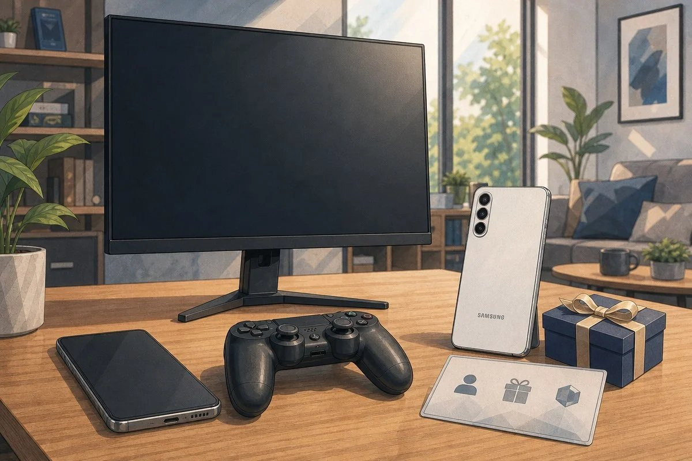

다크에덴R 사전예약 보상 받는 법, 번호·스토어 예약 따로 해야 할까
다크에덴R 사전예약이 11월 9일에 열렸다는 소식을 보고 제일 먼저 든 의문이 있었는데요, 휴대폰 번호로 예약하면 끝나는 건지 스토어에서도 따로 눌러야 하는 건지였어요. 플레이웍스가 내놓는 신작 MMORPG인데, 보도를 보니 이 게임은 예약 경로가 두 갈래라서 보상도 따로 나뉘어 있더라고요. 아직 공식에서 못 박지 않은 건 아래에 따로 모아 뒀어요.
다크에덴R 사전예약 보상, 번호 예약과 스토어 예약을 따로 해야 하나요?
보도에 따르면 휴대폰 번호 예약과 구글 플레이 등 앱 마켓 예약의 보상이 따로 구성돼 있어서, 둘 다 해야 보상을 빠짐없이 받을 수 있는 구조로 보여요.
다만 두 보상이 겹쳐서 지급되는지는 공식 페이지 문구 확인 전이에요. 앱 마켓 예약 보상이 '추가'로 적혀 있어 합산처럼 읽히지만, 이 표현만으로 단정하기는 어렵거든요. 그래서 아래 표는 경로별 수량을 보도에 적힌 그대로 나란히 놓았어요.
| 보상 | 휴대폰 번호 예약 | 앱 마켓 별도 예약 |
|---|---|---|
| 변신 소환권(일반~전설) | 100장 | 100장 |
| 펫 소환권(일반~전설) | 100장 | 100장 |
| 골드 | 10만 | — |
| 귀속 T3 희귀 무기 선택상자 | 1개 | — |
| 아담의 결정 | — | 1,000개 |
'아담의 결정' 같은 이름은 보도에 나온 표기예요, 공식 표기는 확인 전이에요
손이 가는 일은 많지 않잖아요. 번호 예약 한 번, 스토어 예약 한 번이면 되니까 생각보다 간단하네요. 그런데 보상이 나뉘어 있는 만큼 번호 예약만 해 두면 표 오른쪽 열의 아담의 결정은 빠지고, 스토어 예약만 하면 골드와 무기 선택상자가 빠지는 셈이에요.
휴대폰 번호 예약과 스토어 예약, 각각 어떻게 하나요?
휴대폰 번호 예약은 번호로 참여하는 사전예약이고, 스토어 예약은 앱 마켓에서 따로 신청하는 사전예약이에요.
번호 예약은 공식 사전예약 페이지에서 번호로 참여하는 방식이에요. 입력 화면은 아래 사진으로 보여 드릴게요.
공식 사전예약 페이지의 번호 입력 영역과 누적 보상 구간이에요
스토어 쪽은 구글 플레이, 애플 앱스토어, 원스토어 세 곳 모두 서비스 예정으로 알려져 있는데요, 보상 설명에는 '구글 플레이 등'이라고만 적혀 있습니다. 기기에 따라 챙길 순서가 이렇게 갈려요.
기기별로 이렇게 챙기면 돼요
· 안드로이드: 구글 플레이가 보도에서 보상 대상으로 나온 곳이라서, 번호 예약 뒤에 구글 플레이 예약까지 이어서 해 두는 쪽을 권해요
· 아이폰: 앱스토어가 보상 대상인지는 확인 전이라, 번호 예약을 먼저 해 두면 돼요
· 원스토어: 보상 대상인지는 확인 전이라, 번호 예약을 먼저 해 두면 돼요
구글 플레이 다크에덴R 상세 페이지에서 예약 버튼이 있는 영역이에요
누적 예약 보상과 추첨 경품은 뭐가 걸려 있나요?
누적 예약 10만 명부터 100만 명까지 구간별로 인게임 보상과 경품이 걸려 있어요.
보도에서 이름이 나온 추첨 경품은 세 가지예요.
- 헤드셋 로지텍 무선 헤드셋
- 모니터 LG 울트라기어 모니터
- 스마트폰 갤럭시 S26 울트라

위키트리 기사에 실린 AI 자료 이미지예요, 실제 경품이나 공식 이미지는 아니에요
이미지 출처: 위키트리 기사(AI 자료 이미지)
추첨형이라 구간별 보상 내용이 나오기 전까지는 기대치를 높게 잡지 않고 지켜보는 편이 좋겠죠~
아직 공식 확인 전인 것들, 예약 전에 알아둘 점
출시일은 아직 발표되지 않았고, 예약 종료일과 보상 수령 시점, 두 예약 보상의 중복 수령 여부는 공식 페이지 확인 전이에요.
| 항목 | 지금까지 나온 내용 |
|---|---|
| 출시일 | 공식 미공개 |
| 사전예약 종료일 | 출시 전까지 진행되는 것으로 알려져 있어요(정확한 날짜는 확인 전) |
| 보상 수령 시점·방법 | 확인 전(수령 기한과 계정 연동 방식 포함) |
| 두 예약 보상의 중복 수령 | 공식 문구 확인 전 |
| 애플·원스토어의 보상 대상 여부 | 확인 전 |
| 추첨 경품 응모 조건·발표일 | 확인 전 |
확인 위치: 플레이웍스 공식 사전예약 페이지·공식 공지, 구글 플레이/앱스토어/원스토어 다크에덴R 상세 · 확인되면 위 표의 해당 칸을 실제 내용으로 바꿔 주세요.
출시일이 정해지지 않은 단계라 일정과 보상 구성은 바뀔 수 있어요. 수치는 보도 기준이라 공식과 조금 다를 수 있어요.
자주 묻는 질문
Q. 2024년에 스토브에서 했던 다크에덴 사전예약이랑 같은 건가요?
아니에요. 이번 다크에덴R은 다크에덴 IP를 기반으로 개발 중인 신작이고, 다크에덴M을 8년간 서비스해 온 플레이웍스가 만든다고 해요. 2024년 스마일게이트 스토브의 '다크에덴' 사전예약과는 별개 작품으로 알려져 있어요. 검색하면 옛 사전예약 글이 같이 나오니 날짜부터 보세요.
Q. 번호 예약만 먼저 해 뒀는데 스토어 예약을 지금 해도 되나요?
번호 예약과 스토어 예약은 별도 경로라 순서가 달라 보이지는 않아요. 사전예약이 출시 전까지 진행된다고 하니 지금 스토어 예약을 해도 돼요. 가급적 일찍 해 두는 쪽이 좋아요.
다크에덴R 사전예약, 이 순서로 챙기시면 돼요
- 공식 사전예약 페이지에서 휴대폰 번호 예약을 해요
- 쓰시는 기기의 앱 마켓에서 다크에덴R 상세 페이지를 열어 예약을 해요
- 공식 공지에서 중복 수령과 수령 시점이 정해졌는지 확인해요
하나만 하고 끝내면 놓치는 보상이 생기니, 두 경로를 모두 챙겨 두시길 추천드려요.
참고한 곳
· 위키트리 — 다크에덴R 사전예약 보도 기사